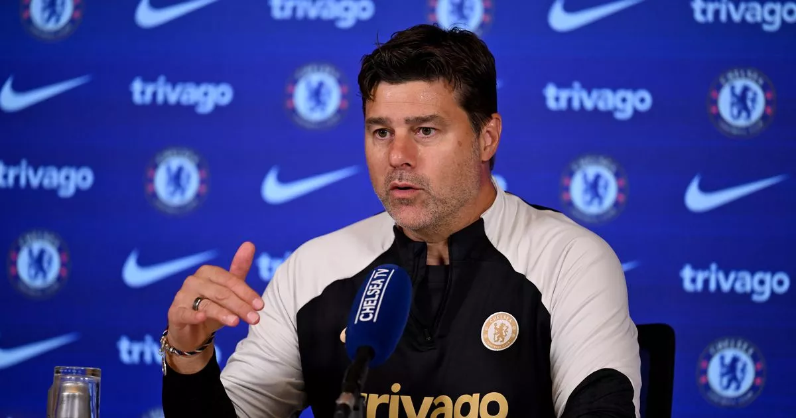

Latest News
In this section of the Official Chelsea Website, you'll find a vibrant hub designed to keep you in the loop with the latest developments, events, and achievements within the Chelsea community. Dive into a curated collection of breaking news, insightful analyses, and behind-the-scenes glimpses into the club's activities. Whether you're interested in player transfers, match previews and reviews, injury updates, or exclusive interviews with coaches and players, this section provides an invaluable resource for staying informed and engaged with all things Chelsea. With timely updates and comprehensive coverage, the "Latest News" section ensures you never miss a beat in the dynamic world of Chelsea Football Club.
Post Match Interviews and Highlights
Immerse yourself in the most thrilling moments and insightful conversations from recent matches. Catch up on the game-changing goals, spectacular saves, and key moments that define each match. Then, delve into post-match interviews with players and coaches, gaining exclusive insights into their thoughts and perspectives.
Team News
Stay ahead of the game with the latest updates on player line-ups, injuries, and squad announcements. Get the inside scoop on who's fit, who's sidelined, and who's poised to make a difference in upcoming matches.
The Chelsea Podcast
Join the conversation as hosts dissect the latest matches, share exclusive interviews with players and staff, and explore the club's rich history and culture. Whether you're commuting, working out, or relaxing at home, this podcast brings the passion and insights of Chelsea straight to your ears. Tune in for a front-row seat to all things Chelsea, wherever you are.